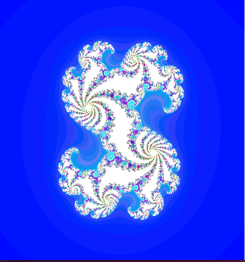
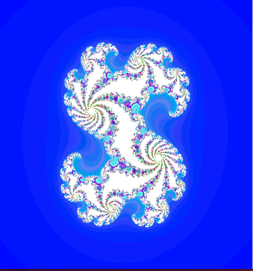

Bienvenue sur ma page perso
 

Bonjour et bienvenue sur mon site !
Je m'appelle Hamady Barry et je suis ingenieur en automatique et automatisme à l'université Claude Bernard Lyon.
Mon travail consiste à développer des applications mobiles et aussi à l'automatisation des procédes industriels.
Je suis en cours d'apprentissage en développement mobile et je suis très heureux pour excercer ce metier.
Si mon parcours vous intresse, vous trouverez ci-dessous mon Curriculum Vitae qui décrit qui suis-je et mes experiences professionnelles.
Pour l'instant c'est un peu vide, mais quand j'aurai appris un peu plus, vous allez etre surpris.